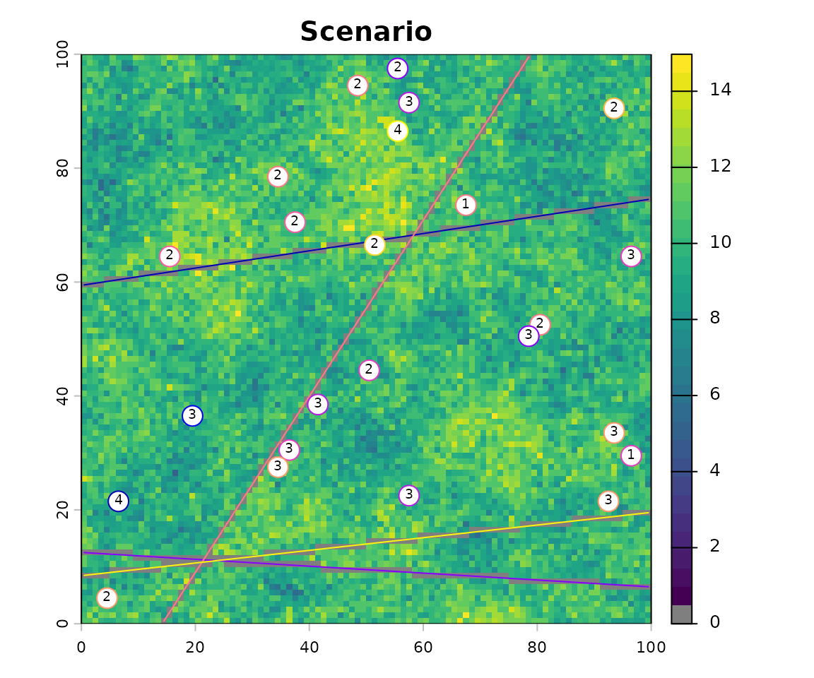
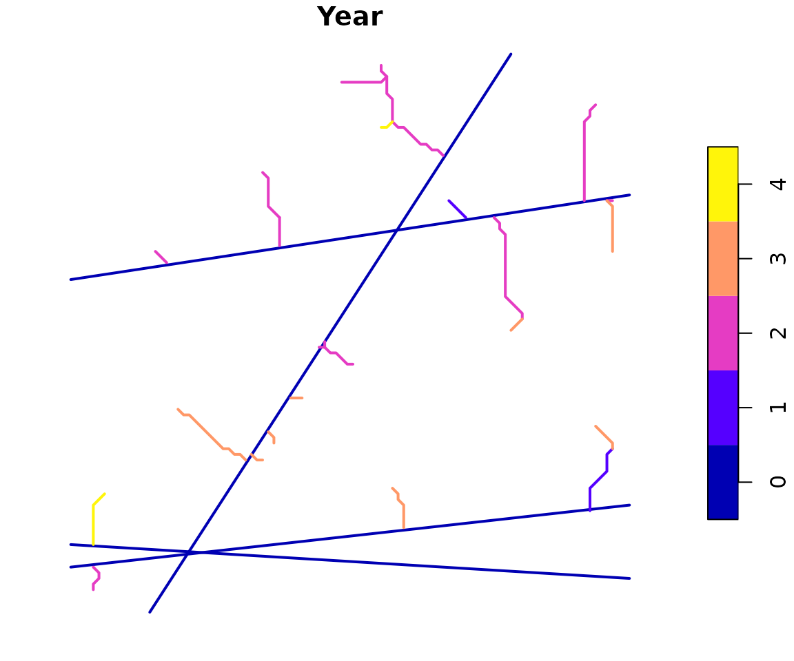

Reconstruct road development history
Source:vignettes/ReconstructRoadHistory.Rmd
ReconstructRoadHistory.Rmd
library(dplyr)
#>
#> Attaching package: 'dplyr'
#> The following objects are masked from 'package:terra':
#>
#> intersect, union
#> The following objects are masked from 'package:stats':
#>
#> filter, lag
#> The following objects are masked from 'package:base':
#>
#> intersect, setdiff, setequal, union
## colours for displaying cost raster
if(requireNamespace("viridis", quietly = TRUE)){
# Use colour blind friendly palette if available
rastColours <- c('grey50', viridis::viridis(30))
} else {
rastColours <- c('grey50', terrain.colors(30))
}
## using demo scenario 1
demoScen <- prepExData(demoScen)
scen <- demoScen[[1]]Road construction times are not always known but they can be inferred from the harvest times of harvest blocks that they access. To do this we need harvest locations with a known sequence and a present day road network where the sequence of road building is not known. The code below creates a demonstration road data set.
# make "real" roads by using ilcp method
# use all landings and build roads to closest first
land.pnts <- scen$landings.points[scen$landings.points$set %in% c(1:4),]
realRoads <- projectRoads(land.pnts, scen$cost.rast, scen$road.line,
roadMethod = "ilcp")
#> 0s detected in weightRaster raster, these will be considered as existing roads
plot(scen$cost.rast, col = rastColours, main = 'Scenario')
plot(realRoads$roads, add = TRUE)
plot(land.pnts, add = TRUE, pch = 21, cex = 2, bg = 'white')
#> Warning in plot.sf(land.pnts, add = TRUE, pch = 21, cex = 2, bg = "white"):
#> ignoring all but the first attribute
text(st_coordinates(land.pnts), labels = land.pnts$set, cex = 0.6, adj = c(0.5, 0.3),
xpd = TRUE)
Our scenario is that we have landings that were harvested over four years and a road network that links them. We will assign a year to each road segment by first setting the cost of building roads to very low where our road network is and then projecting road development to landings in each year, assigning that year to the road segments as a maximum year of road construction.
# Use sequence of landings to assign sequence of roads built
# burn in realRoads to have cost of 0 so that projected roads will follow them.
roadsRast <- terra::rasterize(terra::vect(realRoads$roads), scen$cost.rast,
background = 0) == 0
# doesn't work if weight is 0 because areas with 0 weight are assumed to already be
# roads so no new ones will be built
scen$cost.rast <- scen$cost.rast * (roadsRast + 0.00001)
# set pre-existing roads to year 0
scen$road.line$Year <- 0
# initialize sim list with first landings set
multiTime_sim <- list(projectRoads(land.pnts[land.pnts$set == 1,], scen$cost.rast,
scen$road.line))
#> 0s detected in weightRaster raster, these will be considered as existing roads
multiTime_sim[[1]]$roads <- multiTime_sim[[1]]$roads %>%
mutate(Year = ifelse(is.na(Year), 1, Year))
# iterate over landings sets using the sim list from the previous run as input
for (i in 2:4) {
newSim <- projectRoads(sim = multiTime_sim[[i-1]], landings = land.pnts[land.pnts$set == i,])
newSim$roads <- newSim$roads %>%
mutate(Year = ifelse(is.na(Year), i, Year))
multiTime_sim <- c(
multiTime_sim,
list(newSim)
)
}
#> 0s detected in weightRaster raster, these will be considered as existing roads
#> 0s detected in weightRaster raster, these will be considered as existing roads
#> 0s detected in weightRaster raster, these will be considered as existing roads
plot(multiTime_sim[[4]]$roads["Year"], lwd = 2)